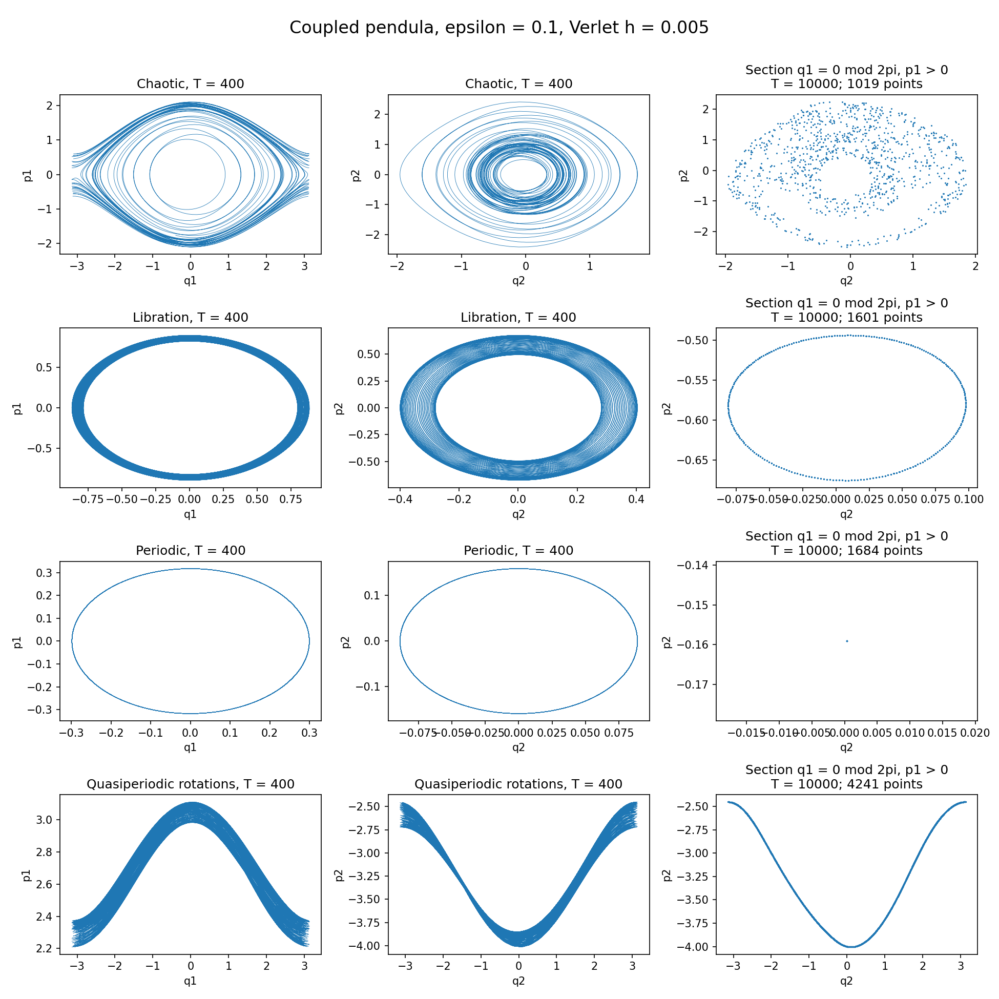

Numerics and validation of KAM tori
Jordi-Lluís Figueras · Universitat Politècnica de Catalunya (UPC)
PhD course materials for the XXVII International Workshop for Young Mathematicians “Dynamical Systems”, Jagiellonian University, Kraków, 20–26 September 2026.
Explore Hamiltonian dynamics, compute invariant tori numerically, and validate their existence using interval arithmetic.
Lecture slides
Read the lecture slides alongside the examples below. The simulation button inside the PDF points to the lecturer’s local presentation server; use the downloadable Python program to run the demonstration on your own computer.
1. Explore: coupled pendula
Experiment with initial conditions and coupling in a Python graphical demonstration. The supplied examples illustrate chaotic motion, libration, periodic motion, and quasiperiodic rotations.

Download the Python program and run locally. See initial conditions, commands, and interpretation.
python3 codes/coupled_pendula.pyThe GUI displays phase-space projections, not Poincaré sections. This pendulum demonstration uses a different Hamiltonian from the coupled-rotator KAM examples below.
2. Compute: a numerical KAM torus
A double-precision quasi-Newton solver computes an invariant torus for a coupled-rotator Hamiltonian, with default frequency (1, (1+sqrt(5))/2). Its shared numerical library includes its own FFT; no external numerical library is required.
After extracting the ZIP, run these commands from toWebSite/:
make -C codes/KAMExample
codes/KAMExample/exampleKAM.x --epsilon 0.01 --grid 64 --tolerance 1e-12 --output torus.csvSolver documentation, output, and plotting instructions · Numerical library
Supplied numerical embeddings: epsilon = 0.01 (CSV) and epsilon = 0.03 (CSV). The full download also includes convergence histories and diagnostics.
3. Validate: a rigorous KAM torus
The independent validator uses MPFI interval arithmetic, with MPFR and GMP, to check the sufficient hypotheses of the implemented KAM theorem. Numerical convergence alone is not an existence proof.
The included certificate validates epsilon = 0.01. The epsilon = 0.03 numerical dataset does not certify with the default settings; failure to certify does not prove nonexistence.
- Build, run, and interpret the validator
- Mathematical contract and theorem-to-code map
- Recorded validation and reproduction instructions
- Recorded certificate (JSON) and exact Fourier candidate
Getting started
Download and extract the complete ZIP, keeping codes/KAMExample/ and codes/lib/ alongside each other. The archive contains a top-level toWebSite/ folder. Commands on this overview page run from that folder.
| Component | Requirements |
|---|---|
| Slides | PDF viewer |
| Pendulum GUI | Python 3, NumPy, Matplotlib, and a graphical backend such as TkAgg |
| Numerical solver | C++17 compiler and GNU make, on Linux or WSL |
| Optional numerical plots | Python 3, NumPy, Matplotlib; can run headlessly |
| Rigorous validator | C++17 compiler, GNU make, MPFI, MPFR, and GMP development libraries |
Installation commands and the complete explore → compute → validate workflow
References and licence
J.-Ll. Figueras and A. Haro, A modified parameterization method for invariant Lagrangian tori for partially integrable Hamiltonian systems, Physica D 462 (2024), 134127. doi:10.1016/j.physd.2024.134127.
Copyright © 2026 Jordi-Lluís Figueras. The distributed source code and Makefiles use the BSD 2-Clause License. The lecture PDF retains its own image and source acknowledgements. External arithmetic libraries are installed separately and retain their respective licences.